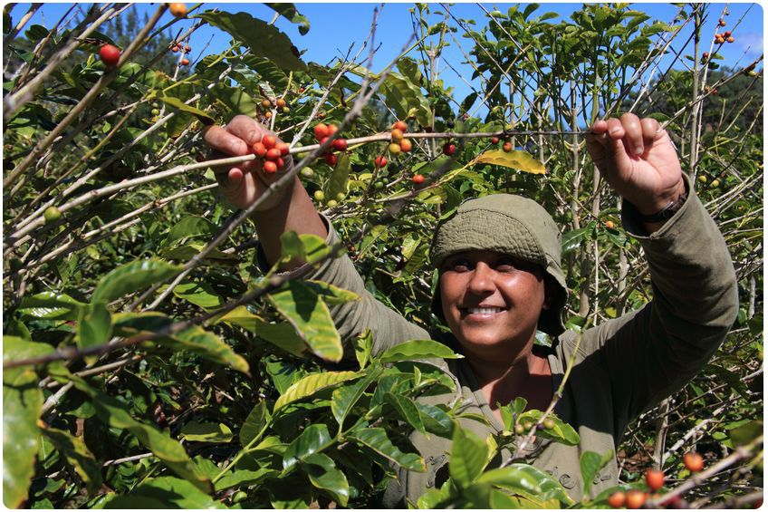

Desde 1933 tostamos nuestro propio café.
Lo cuidamos desde la selección de sus granos, hasta la taza, conservando el amor y el respeto que tenemos por lo que hacemos, desde el primer día. Por eso nuestro café es ÚNICO.

A través de nuestro proceso exclusivo de tostación, logramos resaltar las notas y características propias de los diferentes granos. Un aroma pleno, con notas de chocolate, pan tostado, miel y caramelo y un sabor con cuerpo, con un toque de frescura, es lo que hace inconfundible a un Café Martínez, siempre.